Dados & BI
Organizar dados e criar análises e dashboards que apoiem decisões melhores.
Explorar competênciasSOFTWARE · DADOS · AUTOMAÇÃO
Prazer, sou Edson Ricobom. Desenvolvo software e transformo problemas complexos em soluções úteis, da análise de dados às aplicações web.
SOBRE
Sou apaixonado por desenvolvimento de software e por resolver problemas complexos.
Transito entre front-end, back-end, dados e automação, conectando tecnologia às necessidades de pessoas e processos. Estou sempre aprendendo e buscando maneiras melhores de construir.
Ouvir, investigar e encontrar o que realmente precisa melhorar.
Dados, sistemas e pessoas trabalhando em conjunto.
Soluções claras, úteis e pensadas para o dia a dia.
NO QUE POSSO CONTRIBUIR
Da informação à aplicação, cada área ajuda a transformar uma necessidade em um próximo passo concreto.
Organizar dados e criar análises e dashboards que apoiem decisões melhores.
Explorar competênciasReduzir tarefas repetitivas com aplicativos e fluxos entre sistemas.
Explorar competênciasCriar interfaces responsivas, funcionais e agradáveis de usar.
Explorar competênciasDesenvolver lógica de aplicações e trabalhar com bancos de dados e ERP.
Explorar competênciasApoiar equipes, processos e atendimento com comunicação e organização.
Explorar competênciasCAIXA DE FERRAMENTAS
Tecnologias e práticas presentes no meu repertório, agrupadas para você encontrar cada área com facilidade.
Exploração e interpretação
Plataforma de dados
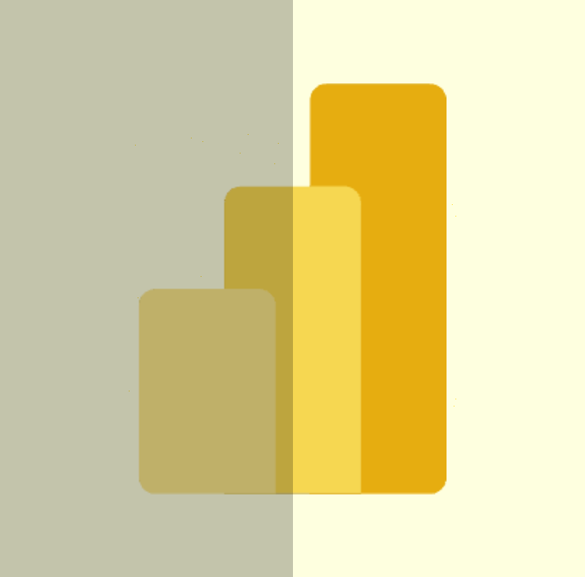
Dashboards e relatórios
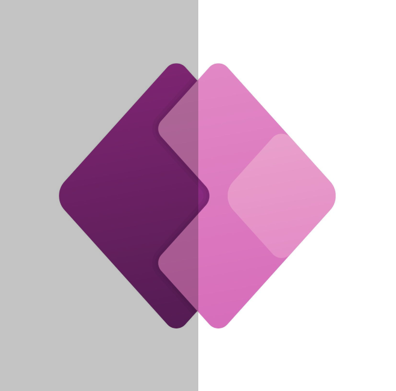
Aplicativos de negócio
Fluxos de trabalho
Estrutura web
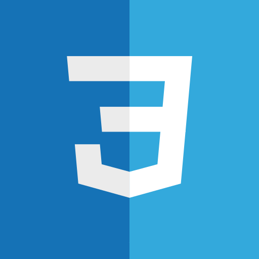
Estilo e responsividade
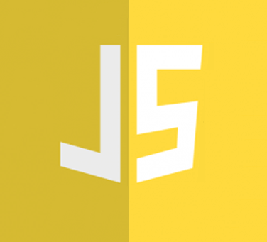
Interatividade web
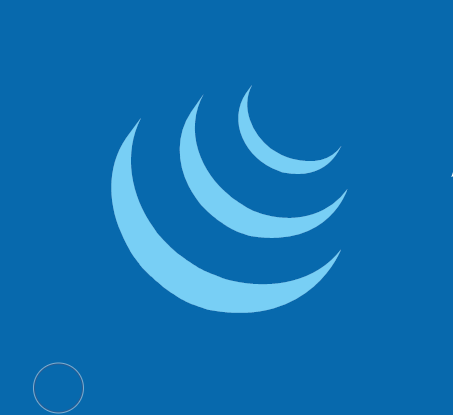
Biblioteca JavaScript
Criação de sites
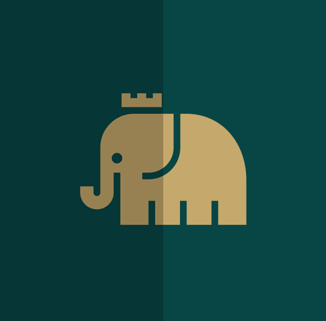
Desenvolvimento back-end
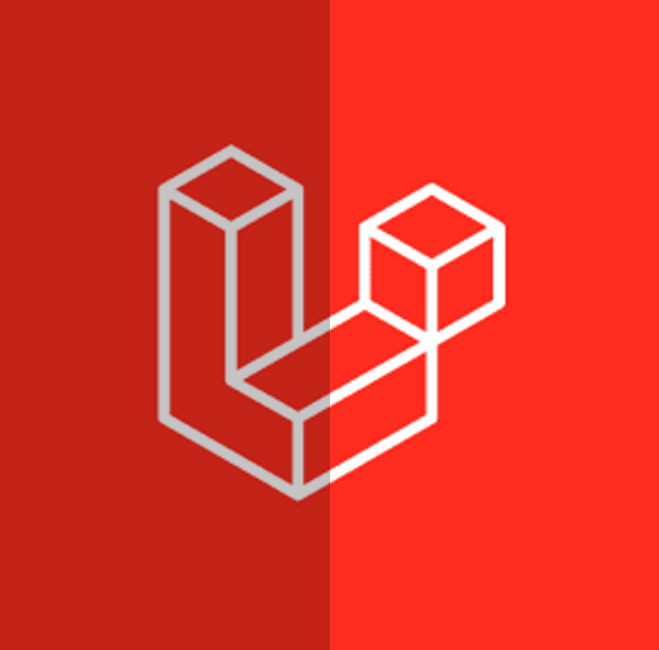
Framework PHP
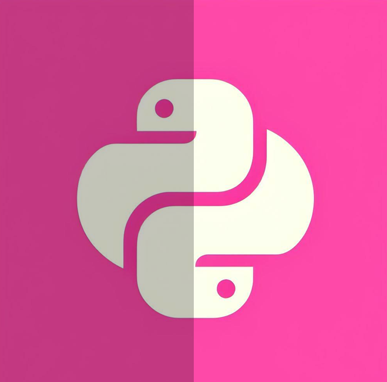
Linguagem de programação
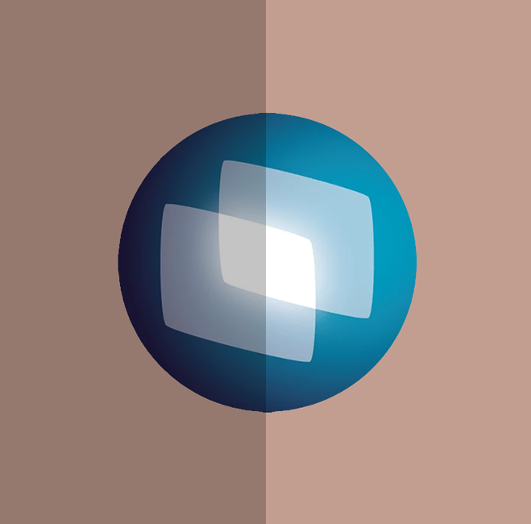
ERP e desenvolvimento
Banco de dados
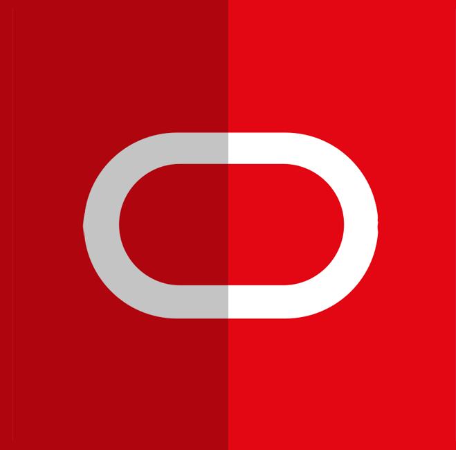
Banco de dados
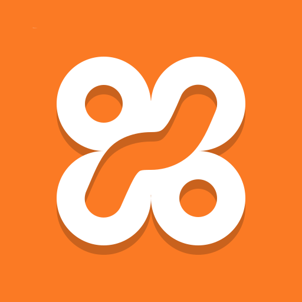
Ambiente local PHP
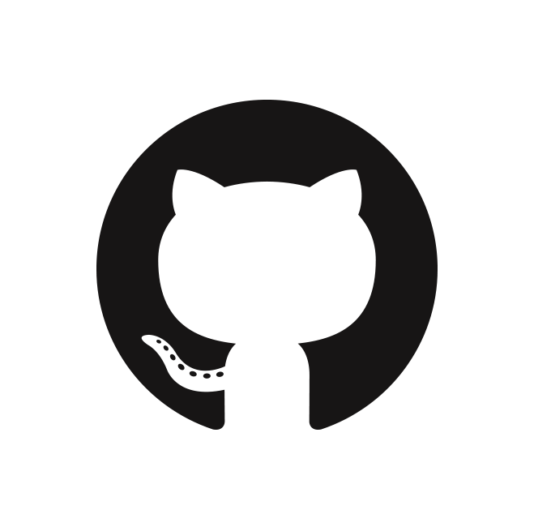
Versionamento
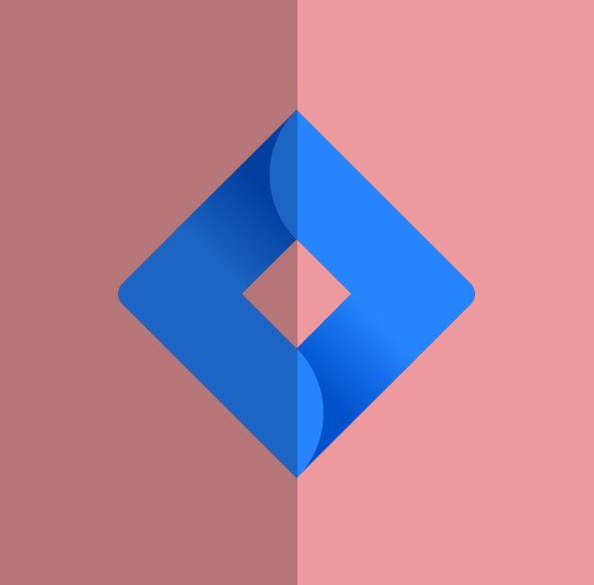
Gestão de projetos
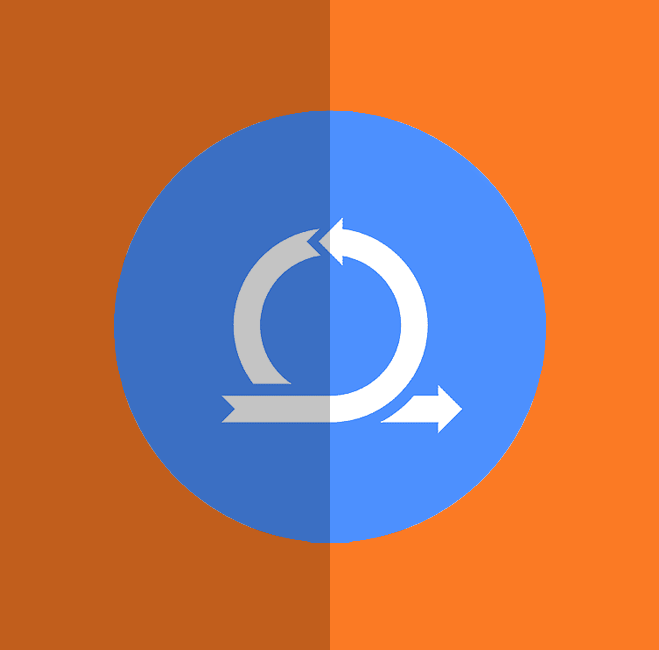
Prática ágil
Processos e colaboração
Atendimento e administração
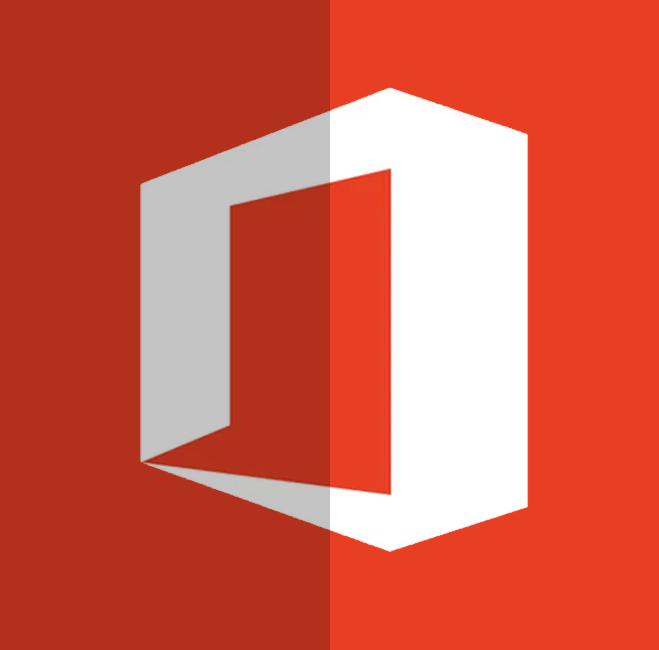
Word, Excel, PowerPoint e Outlook
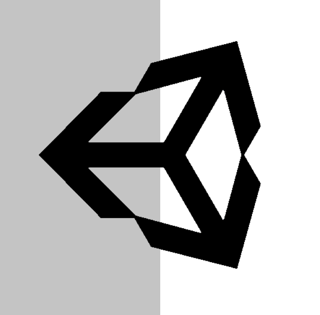
Projetos pessoais e C#
Prática com projetos pessoais
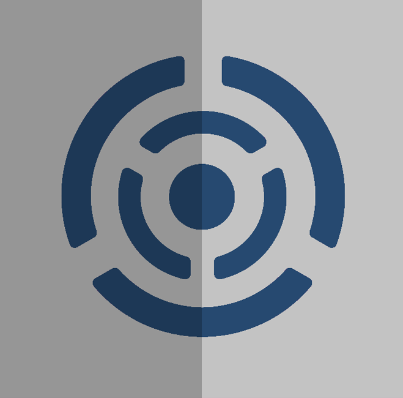
Repositórios e branches
CONTATO
Tem uma ideia, um desafio ou quer trocar experiências? Vai ser um prazer conversar.
edricobom@gmail.com Ver meu GitHubQuando o código descansa, a bancada e a Pokédex assumem.